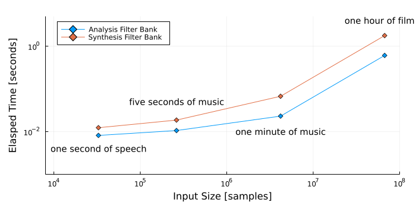
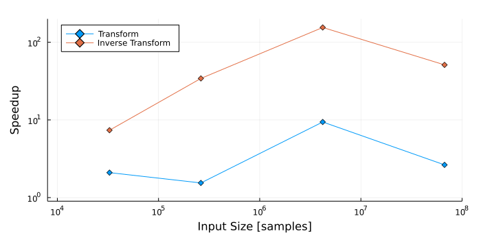

Timing¶
using NBInclude;
using Plots;
using Statistics;
@nbinclude("GPUFilterBanks.ipynb");
@nbinclude("AudioTools.ipynb");
x = load("three_minute_warning.wav");
fs = round(Int,x.samplerate);
x = Float32.(x[:]);
N_list = 2 .^ ([15,18,22,26]);
num_octaves = 10;
filters = [
WT.makeqmfpair(wavelet(WT.haar)),
WT.makereverseqmfpair(wavelet(WT.haar))
];
LA = tensor(Float32.(filters[1][1]));
HA = tensor(Float32.(filters[1][2]));
LS = tensor(Float32.(filters[2][1]));
HS = tensor(Float32.(filters[2][2]));
n_trials = 5;
x_i = nothing
y = nothing
elapsed_time = zeros(length(N_list),2,n_trials);
for (N,i_N) ∈ zip(N_list,1:length(N_list)), trial ∈ 1:n_trials
x_i = [tensor(x[1:N])]
elapsed_time[i_N,1,trial] = Base.@elapsed y = analysis_filterbank(x_i,LA,HA)
elapsed_time[i_N,2,trial] = Base.@elapsed synthesis_filterbank(y,LS,HS)
y = nothing
end
elapsed_time = median(elapsed_time,dims=3)[:,:]
4×2 Matrix{Float64}:
0.00816263 0.0123718
0.0106195 0.0186567
0.0230988 0.0673673
0.608797 1.77462
h = plot(N_list,elapsed_time,
seriestype = :line,
marker = :d,
xaxis=:log, yaxis=:log,
labels=["Analysis Filter Bank" "Synthesis Filter Bank"],
size=(700,350),
xlim=(8e3,1e8),
ylim=(1e-3,5),
legend=:topleft,
ylab="Elasped Time [seconds]",xlab="Input Size [samples]",
margin=5Plots.mm,
)
annotate!(h,
2^15 , 4e-3 ,
text("one second of speech",:black, :center, 10))
annotate!(h,
2^18 , 5e-2 ,
text("five seconds of music",:black, :center, 10))
annotate!(h,
2^22 , 1e-2 ,
text("one minute of music",:black, :center, 10))
annotate!(h,
2^(25.8) , 4 ,
text("one hour of film",:black, :center, 10))

;cat seq_time.py
import librosa
import numpy as np
import time
y,sr = librosa.load("three_minute_warning.wav")
for N in [2**15,2**18,2**22,2**26]:
t1 = time.time()
x_i = y[0:N]
S = librosa.feature.melspectrogram(
y=x_i,
sr=sr,
n_fft=2^20,
hop_length=32,
n_mels=512,
)
t2 = time.time()
print(t2-t1,"\n")
t1 = time.time()
y_rec = librosa.feature.inverse.mel_to_audio(
M=S,
sr=sr,
n_fft=2^20,
hop_length=32,
)
t2 = time.time()
print(t2-t1,"\n")
;taskset --cpu-list 0 python3 seq_time.py
0.017119169235229492
0.09121012687683105
0.016405582427978516
0.6389076709747314
0.21744465827941895
10.451849699020386
1.606813669204712
90.8090467453003
/usr/local/lib/python3.9/dist-packages/librosa/filters.py:238: UserWarning: Empty filters detected in mel frequency basis. Some channels will produce empty responses. Try increasing your sampling rate (and fmax) or reducing n_mels.
warnings.warn(
cpu_time = reshape([
0.017119169235229492
0.09121012687683105
0.016405582427978516
0.6389076709747314
0.21744465827941895
10.451849699020386
1.606813669204712
90.8090467453003
],(2,4))'
4×2 adjoint(::Matrix{Float64}) with eltype Float64:
0.0171192 0.0912101
0.0164056 0.638908
0.217445 10.4518
1.60681 90.809
h = plot(N_list,cpu_time./elapsed_time,
seriestype = :line,
marker = :d,
xaxis=:log, yaxis=:log,
labels=["Transform" "Inverse Transform"],
size=(700,350),
ylim=(0.9,200),
xlim=(8e3,1e8),
legend=:topleft,
ylab="Speedup",xlab="Input Size [samples]",
margin=5Plots.mm,
)
